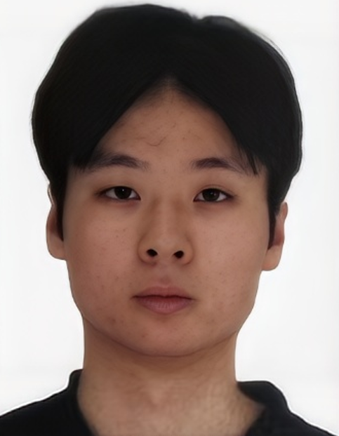
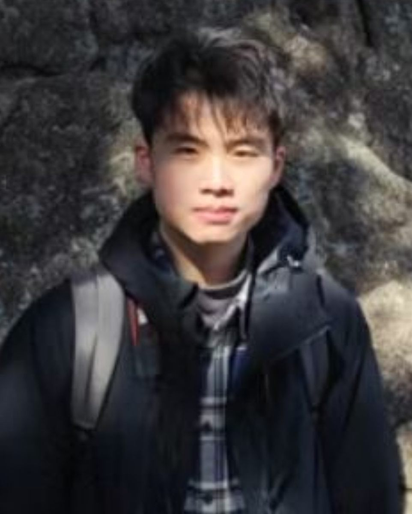
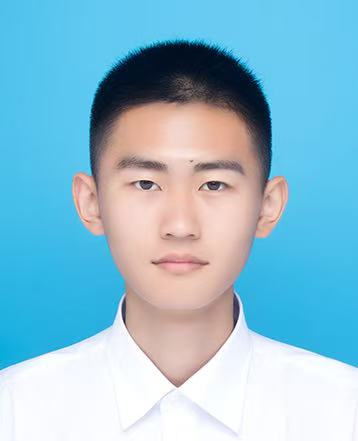
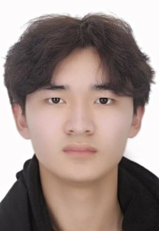
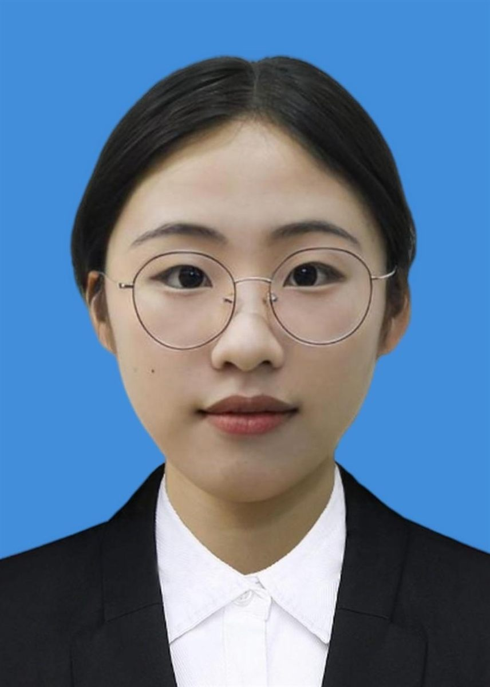
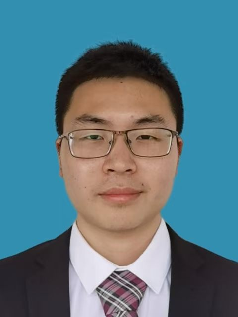
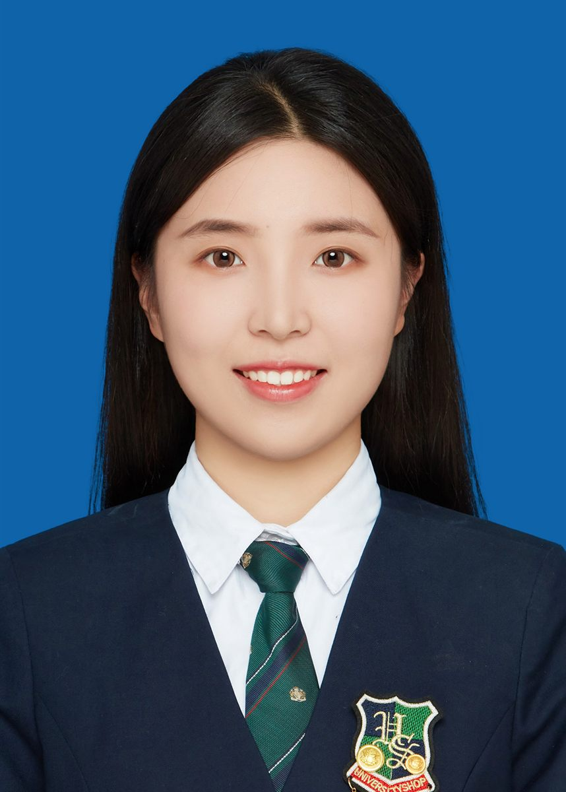
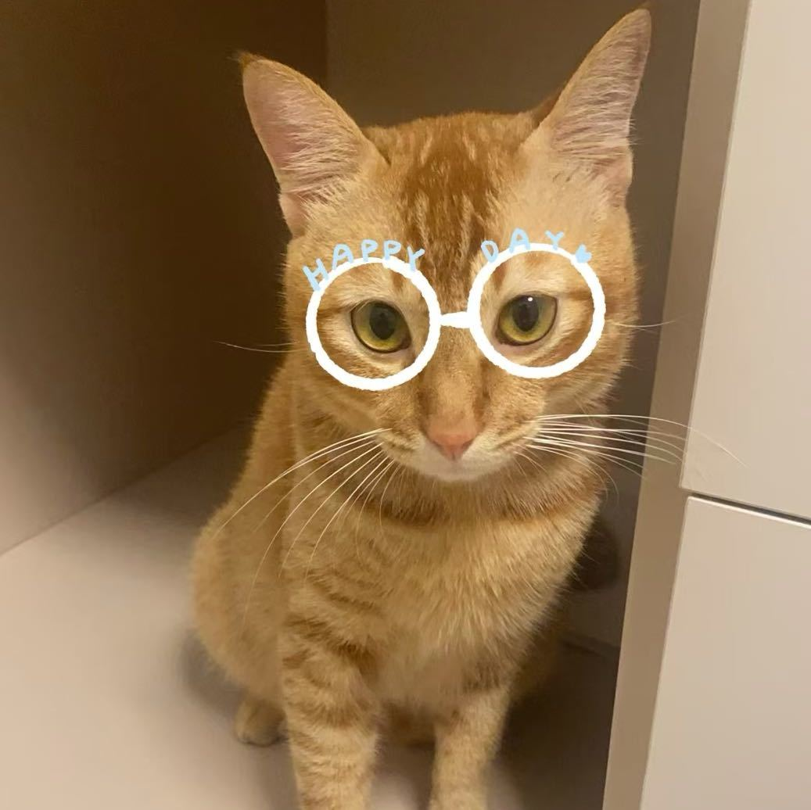

-
Jie Zhou (PhD. Student) - Jie is committed to exploring the application of LLMs in the realm of Hardware Description Languages (HDLs) with a focus on automating the generation and debugging processes.

-
Xiaomeng Han (PhD. Student) - Xiaomeng focuses on software/hardware co-design of LLMs. He is committed to achieving the edge deployment of LLMs through software/hardware co-Design, to accelerate the application of LLMs in real- world scenarios.

-
Ke Xu (PhD. Student) -
(Cosupervised with Weiwei Shan@SEU) Ke is a Ph.D. candidate in Electronic Science and Technology at Southeast University. His current research focuses on leveraging LLMs for RTL code debugging and multi-server simulation. Ke's GitHub homepage: https://github.com/Satan-23333.

-
Dean You (Master Student) - Dean's research intereasts are around architectural techniques for: data prefetching for irregular memory access patterns in hardware, run-time hardware support for processor security and reliability, and fine-grained preemptive techiniques for NPUs.

-
Jialin Sun (Master Student) - Jialin currently focuses on hardware/software co-simulation accelerators.

-
Zhihang Tan (Master Student) - Zhihang focuses on hardware-based techniques for data prefetching to address memory latency in CPUs, particularly for irregular memory access patterns in large-scale data processing. Future work may expand to using simulators for broader evaluation and optimization.

-
Xiaoxuan Wang (Master Student) - Xiaoxuan focuses on hardware-based techniques for data prefetching, based on the execution order of instructions and the access pattern of data. Future work may expand to the architecture design and optimization of out-of-order processors.

-
Dingrong Pan (Hardware Engineer) - Dingrong is a Hardware verification engineer. She has worked on IP level verification for large Soc chips. Currently working on our project of LLM-based hardware design and verfication, with a focus on verification and debugging.

-
Renshuang Jiang (PhD. student) -
(Cosupervised with Pan Dong@NUDT) RenShuang works on modular operating system architecture design, including flexible isolation and refactoring systems. She previously worked on projects related to enhancing the safety of the Rust programming language and is also interested in using Rust to rewrite OSes.

-
Tinglue Wang (PhD. Student) - Tinglue studied at the School of Electronic Science and Engineering, SEU for four years during his undergraduate studies. Tinglue is interested in SoCs/CPUs architecture design and digital circuit design, and is working on a safety-critical multi-core CPU architecture design project based on Berkeley chipyard platform.

-
Yuchen Hu (PhD. Student) -
(Cosupervised with Weiwei Shan@SEU) Yuchen's research interests include the application of Large Language Models (LLMs) in hardware design verification. Specifically, it focuses on integrating LLMs with the Universal Verification Methodology (UVM) to automate the testing and repair of error-prone RTL codes, aiming to improve verification efficiency and overcome the limitations of existing methods.

-
Wei Tang (Master Student) - Wei focuses on the collaborative development of safety-critical SoC chips with RISC-V architecture, with responsibilities including writing and optimizing microarchitecture code. Wei also designs and verifies inspection hardware units between the main and slave cores, aiming to correct detected errors and further optimize chip units.

-
Hui Wang (Master Student) - Hui's research interests are around MLSys. He is dedicated to achieving Efficient ML through the study of machine learning algorithms and software/hardware infrastructure. Here is Hui's github: https://github.com/shirohasuki.

-
Junhao Ye (Master Student) - Junhao's research interests are centered on the simulation of architectures and the automated debugging of LLMs, as well as the design of AI accelerators. He is currently working on the automated generation of UVM based on LLMs and was awarded the National Scholarship for Undergraduate Students in 2023. Junhao is also a learning zone up-mainer on Bilibili: "https://space.bilibili.com/674491625?spm_id_from=333.1007.0.0".

-
Shiyue Zhang (Master Student) - Shiyue studied at the School of Electronic Science and Engineering of Southeast University for four years during her undergraduate studies. Shiyue is interested in the application of LLMs in circuits and digital circuit design, and is conducting research on the application of LLMs in circuits.

-
Youshu Ji (Software Engineer) - Youshu is a software enginer, currently working on our project of LLM-based agile hardware design and verfication. Here is Youshu's github: https://github.com/lvzii.

-
Yushu Du (Research Assistant) - Yushu specializes in high-performance processor design and is currently focused on exploring instruction prefetching and branch prediction techniques for server-grade processors. Meanwhile, Yushu also has a peripheral interest in processor reliability and data prefetching technologies.